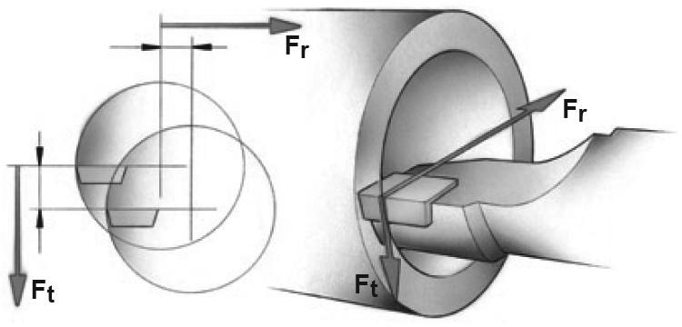
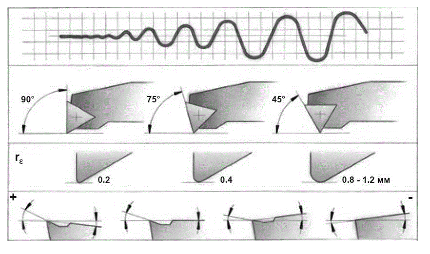
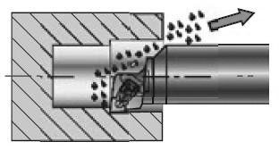

Большинство операций внутренней обработки, к числу которых относится и растачивание, выполняются невращающимся инструментом (в отличие от расточки вращающимся инструментом на обрабатывающих центрах). При наружных операциях длина обработки не влияет на вылет инструмента и размер сечения державки может быть выбран так, чтобы должным образом противостоять растущим в процессе обработки силам резания. При растачивании, внутренней обработке выбор инструмента очень сильно зависит от диаметра обрабатываемого отверстия, а длина обработки или глубина отверстия определяет вылет.
Основным руководством, действующим для всех областей применения, является выбор инструмента с минимальным вылетом и по возможности самого большого диаметра, но часто возможности такого выбора бывают ограничены диаметром отверстия, при обработке которого необходимо обеспечить беспрепятственный отвод стружки и необходимые радиальные перемещения инструмента.
Из-за множества ограничений при расточке в отношении стабильности процесса резания, операции растачивания требуют самого тщательного подхода и детальной проработки. Правильный выбор расточной оправки, ее соответствующее закрепление и использование могут уменьшить риск возникновения вибраций и нежелательных отклонений инструмента и, как следствие, обеспечить хорошее качество обработанного отверстия.
В процессе обработки тангенциальная и радиальная составляющие силы резания стремятся «отжать» инструмент от заготовки.
Тангенциальная составляющая будет пытаться сместить инструмент ниже линии центров, тем самым, уменьшая величину заднего угла. Это особенно важно при обработке отверстий небольшого диаметра, когда пластина должна иметь значительный задний угол, чтобы не «затирать» обработанное отверстие.
Отклонение под действием радиальной силы означает уменьшение глубины резания и уменьшение толщины стружки, что грозит появлением вибраций. Жесткость инструмента и его крепления будут определять величину и степень возрастания вибраций.
Геометрия пластины играет значительную роль при выборе инструмента для растачивания, поскольку положительные передние углы вызывают низкие тангенциальные силы.
Главный угол в плане влияет на направление и величину осевой и радиальной составляющих силы резания и на результирующее отклонение от этих сил. Большой угол в плане вызывает значительную осевую силу, а результатом выбора маленького угла является увеличение силы, действующей в радиальном направлении. Однако, действие на процесс резания от осевой силы, как правило, невелико, так как она направлена по оси расточной оправки. Поэтому преимущество выбора склоняется в сторону большего главного угла в плане. Рекомендуется выбирать главный угол в плане близким к 90° и не менее 75°, когда начинается интенсивный рост радиальной силы резания.
Обычно при растачивании первым выбором является небольшой радиус при вершине пластины. Большое значение радиуса вызывает увеличение радиальной и тангенциальной составляющих сил резания и повышение склонности к вибрациям. На радиальное отклонение инструмента даже большее значение будет оказывать соотношение глубины резания и радиуса при вершине пластины. Чем меньше будет это отношение, тем больше будет величина радиальной составляющей силы. Когда радиус при вершине равен или больше глубины резания, радиальное смещение инструмента будет определяться главным углом в плане.
На практике рекомендуется выбирать радиус при вершине пластины немного меньше глубины резания. В этом случае радиальная составляющая силы резания будет минимальной. В то же время больший радиус при вершине обеспечивает прочность режущего клина и низкую шероховатость поверхности, но вызывая повышенное давление на режущую кромку.
Отжим расточной оправки во время работы зависит от материала оправки, диаметра, вылета инструмента, значения силы резания и закрепления оправки на станке. Самое ничтожное смещение в узле крепления оправки уже будет вызывать отжим инструмента. Современный высокопроизводительный расточной инструмент требует высочайшей степени жесткости и надежности закрепления. По крайней мере нужно, чтобы внутренние поверхности блока крепления были чистыми, высокого качества и достаточной твердости.
Удаление стружки при расточке является определяющим фактором производительности и надежности процесса обработки. Цель оптимизации режимов резания при внутренней обработке состоит в получении относительно короткой спиралевидной стружки. Она легко эвакуируется из зоны обработки и, в тоже время, не создает значительной нагрузки на режущую кромку, которая возникает при интенсивном стружколомании.
Сильно деформированная мелкая стружка вызывает колебания сил резания, что может стать причиной вибраций и потребует больших затрат мощности. С другой стороны длинная сливная стружка плохо удаляется из зоны обработки, что может привести к ее пакетированию. Таким образом, необходимо выбирать геометрию передней поверхности пластины и режимы обработки так, чтобы обеспечить надежный контроль за формированием стружки.
При рассмотрении процесса внутренней обработки, обеспечение свободного вывода стружки также является критическим фактором, особенно для глубоких отверстий. На практике центробежные силы прижимают стружку к стенкам отверстия и стружка не выводится из отверстия. Если оставшаяся в отверстии стружка окажется зажатой между инструментом и стенкой отверстия, это может стать причиной задиров на обработанной поверхности или привести к поломке инструмента. Поэтому рекомендуется всегда использовать расточные оправки с внутренним подводом СОЖ. Поток СОЖ эффективно вымывает стружку из отверстия. Вместо СОЖ также может быть успешно использован сжатый воздух. В случае расточки сквозного отверстия можно вымыть или выдуть стружку вперед через отверстие шпинделя станка и обеспечить ее сбор в специальном контейнере.